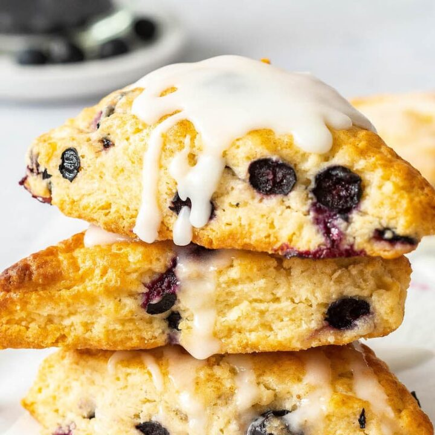

Blueberry Scones

Description
A good basic scone recipe with blueberries
Ingredients
- 2 cups all-purpose flour
- 1/4 cups packed brown sugar
- 1 tablespoon baking powder
- 1/4 teaspoon salt
- 1/4 cup butter, chilled
- 1 cup fresh blueberries
- 3/4 cup half-and-half
- 1 egg
Directions
-
Preheat oven to 375 degrees F (190 degrees C).
-
Cut butter into mixture of flour, sugar, baking powder, and salt. Add blueberries and toss to mix.
-
In separate bowl beat together cream and egg, and slowly pour into dry ingredients, stirring with rubber scraper until dough forms. Knead just until it comes together, 3 or 4 times. Don't overhandle.
-
Divide dough in half. On lightly floured board, shape each half into a 6-inch round. Cut into 6 wedges.
-
Bake on ungreased sheet about 20 minutes at 375 degrees F (190 degrees C). Serve warm!!
Homepage